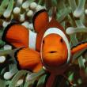
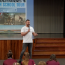
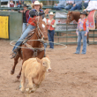
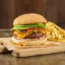

In Defense of Animals works to protect farmed animals
Animals raised for food are among the least-protected animals across the globe. They are denied the same legal protection from cruelty as dogs or cats, despite sharing the same capacity to suffer.
In Defense of Animals works to protect farmed animals by lobbying for legal change, pressuring major food supply chains to make plant-based meals widely available, and public awareness initiatives to inspire cruelty-free lifestyle choices.
Major Campaigns and Projects

Respect for Fish

Strength in Kindness High School Tour
Dairy-free Challenge
Ten Worst Chefs

Rodeo: The Cruelest Show on Dirt
